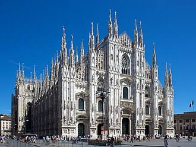
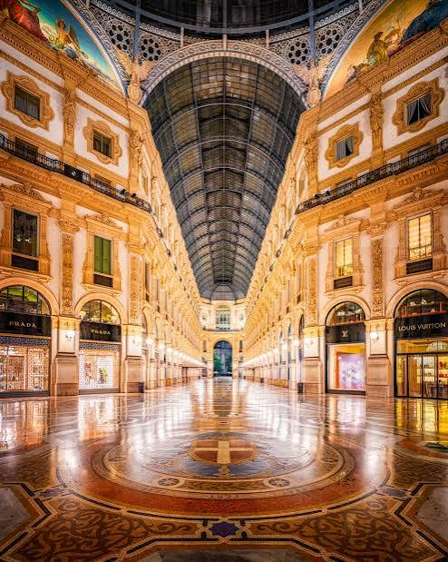
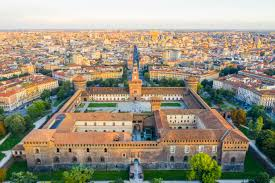
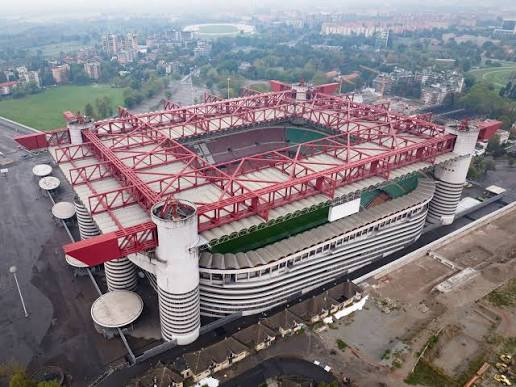

Vi propongo di seguito 4 attrazioni imperdibili per Milano, anche precedentemente accennate nel footer!
Duomo di Milano

Il Duomo: l'anima di Milano Inutile girarci intorno: Piazza Duomo toglie il fiato ogni singola volta. Questa immensa cattedrale di marmo bianco, con le sue mille guglie che si stagliano nel cielo, è il vero cuore pulsante della città. Non è solo un monumento da fotografare, ma un posto pieno di dettagli da scoprire, dalle grandissime vetrate colorate alla Madonnina che veglia dall'alto. Il mio consiglio? Sali sulle terrazze al tramonto. Camminare sul tetto di Milano mentre la città si accende è un'emozione che ti resta dentro per sempre
Duomo di milanoGalleria Vittorio Emanuele II

La Galleria Vittorio Emanuele II è lo storico e monumentale "salotto" che collega Piazza del Duomo a Piazza della Scala nel cuore di Milano. Progettata da Giuseppe Mengoni e inaugurata nel 1867, rappresenta uno dei primi esempi al mondo di centro commerciale e un capolavoro in ferro e vetro, dominato da una cupola alta 47 metri. Oggi ospita boutique di altissimo lusso e ristoranti storici, tutti caratterizzati dalle iconiche insegne con scritte dorate su sfondo nero. Al centro del suo pavimento a mosaico, il celebre rito scaramantico del toro attira ogni giorno cittadini e turisti da ogni parte del mondo.
Castello sforzesco

Il Castello Sforzesco è uno dei monumenti più imponenti e ricchi di storia di Milano, situato ai margini del Parco Sempione. Costruito nel XV secolo da Francesco Sforza sulle rovine di una precedente fortificazione medievale, nacque come residenza ducale e divenne una delle principali cittadelle militari d'Europa. La sua architettura è celebre per l'iconica Torre del Filarete e per i suggestivi cortili interni che collegano la città al parco. Oggi la struttura è un vivace polo culturale che ospita importanti musei civici, archivi storici e biblioteche. Al suo interno custodisce capolavori d'arte unici al mondo, tra cui spiccano la celebre Pietà Rondanini di Michelangelo e la splendida Sala delle Asse affrescata da Leonardo da Vinci.
Castello sforzescoStadio San Siro

Lo Stadio Giuseppe Meazza, universalmente noto come San Siro, è l'impianto sportivo più capiente d'Italia e un'autentica icona globale del calcio. Inaugurato nel 1926 nel quartiere da cui prende il nome, è soprannominato la "Scala del Calcio" per via della sua importanza storica, del design inconfondibile con le iconiche torri cilindriche e dell'atmosfera unica. Struttura condivisa fin dal 1947 dalle due storiche rivali cittadine, Inter e Milan, lo stadio ospita regolarmente anche i più grandi concerti musicali internazionali. L'area circostante è al centro di una storica trasformazione urbanistica guidata dai due club, proprietari del complesso, che prevede l'avvio della costruzione di un nuovo e modernissimo impianto adiacente entro il 2027.
Stadio San Siro